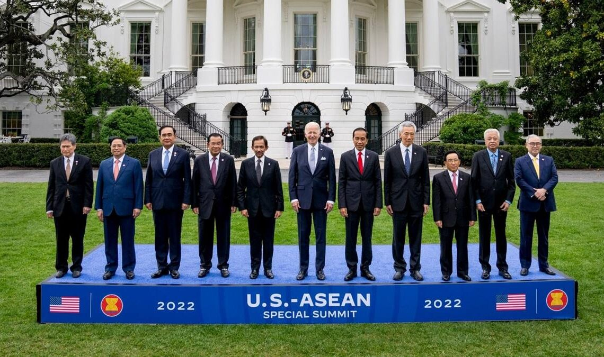
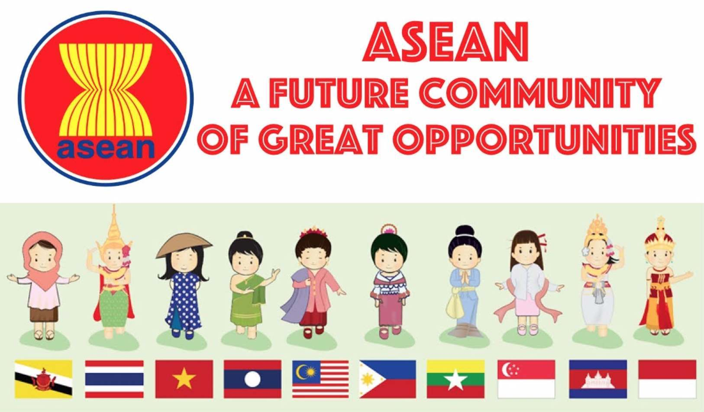
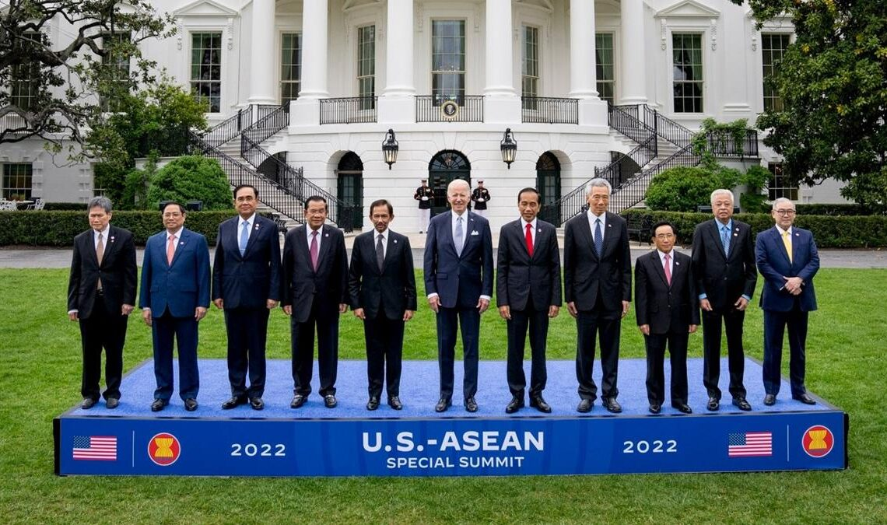
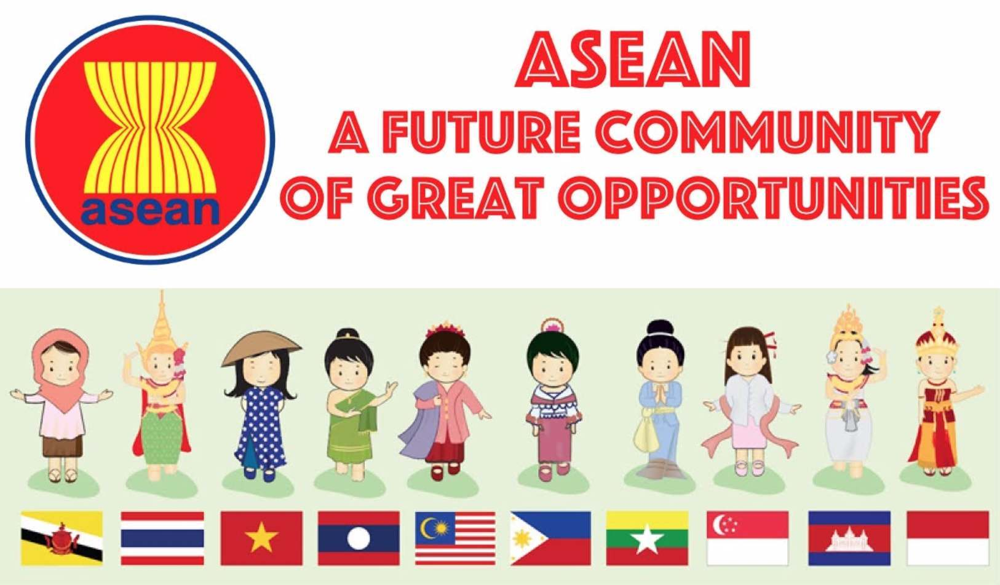
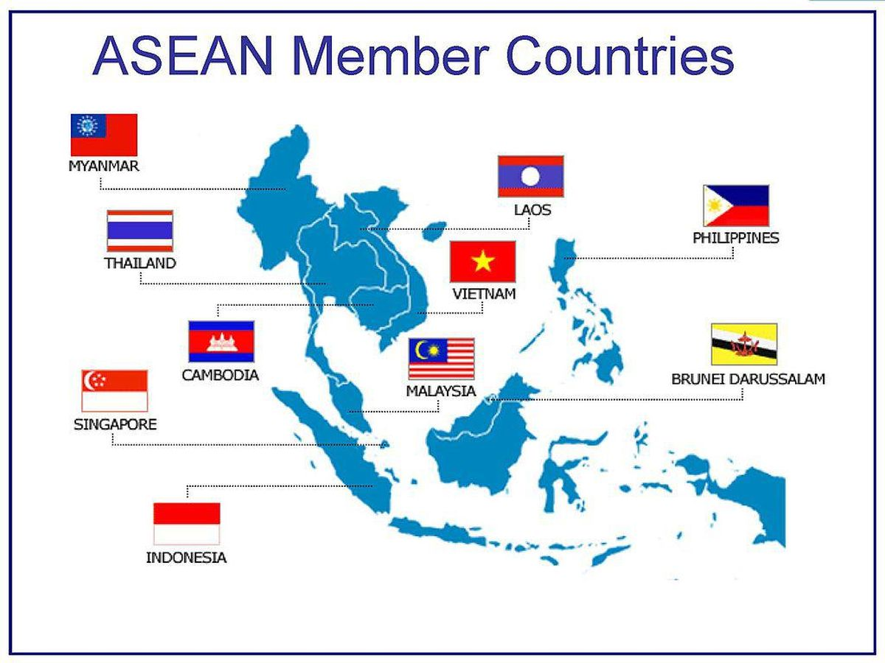
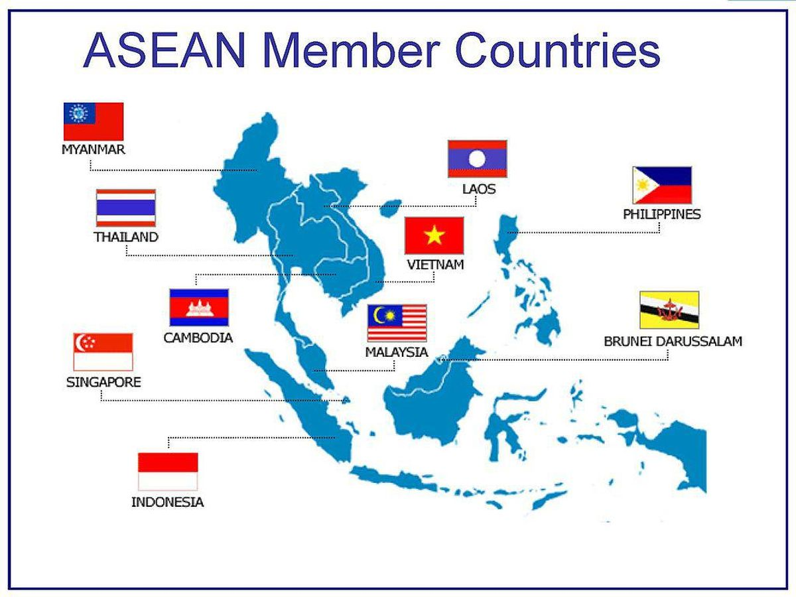

 

Penjelasan
ASEAN (Association of Southeast Asian Nations) adalah organisasi regional yang terdiri dari negara-negara
di kawasan Asia Tenggara. ASEAN didirikan pada 8 Agustus 1967 melalui Penandatanganan Deklarasi Bangkok
oleh lima negara pendiri, yaitu Indonesia, Malaysia, Filipina, Singapura, dan Thailand. Tujuan utama
ASEAN adalah untuk mempercepat pertumbuhan ekonomi, meningkatkan perdamaian dan stabilitas di kawasan,
serta mempromosikan kerjasama dalam berbagai bidang, seperti ekonomi, politik, sosial, dan budaya.
Seiring waktu, ASEAN berkembang dengan menerima lebih banyak negara anggota. Brunei Darussalam bergabung
pada 1984, Vietnam pada 1995, Laos dan Myanmar pada 1997, serta Kamboja pada 1999. Hingga saat ini,
ASEAN terdiri dari 10 negara anggota yang meliputi Indonesia, Malaysia, Filipina, Singapura, Thailand,
Brunei Darussalam, Vietnam, Laos, Myanmar, dan Kamboja. Dengan jumlah penduduk lebih dari 650 juta
orang, ASEAN merupakan salah satu kawasan dengan potensi pasar terbesar di dunia.
ASEAN bertujuan untuk memperkuat kerjasama antar negara anggotanya melalui berbagai mekanisme, seperti
pembentukan kawasan perdagangan bebas ASEAN (AFTA), yang mengurangi hambatan tarif antar negara anggota
untuk memperlancar arus perdagangan. Selain itu, ASEAN juga mengembangkan kebijakan ekonomi yang lebih
terkoordinasi untuk mempercepat integrasi ekonomi regional. Dalam bidang politik, ASEAN berkomitmen
untuk menciptakan stabilitas kawasan dengan mendorong dialog dan penyelesaian damai terhadap konflik
yang muncul di antara negara-negara anggotanya.
Pada tingkat internasional, ASEAN berusaha untuk memperjuangkan kepentingan bersama negara-negara
anggotanya dengan mempererat hubungan dengan negara-negara besar dan organisasi internasional lainnya.
ASEAN juga aktif dalam berbagai forum internasional, seperti PBB, APEC, dan G20, untuk memberikan
kontribusi pada masalah-masalah global, seperti perubahan iklim, perdamaian, dan keamanan internasional.
Dalam rangka memperkuat peran ASEAN di dunia, ASEAN juga membentuk sejumlah kemitraan strategis dengan
negara-negara besar, seperti China, Jepang, Amerika Serikat, dan India.
Selain bidang ekonomi dan politik, ASEAN juga memberikan perhatian besar pada pengembangan sosial dan
budaya di kawasan ini. Program-program pendidikan dan pertukaran budaya antar negara anggota bertujuan
untuk meningkatkan pemahaman dan solidaritas antara masyarakat negara-negara ASEAN. ASEAN juga berupaya
untuk menciptakan masyarakat ASEAN yang inklusif, berkeadilan, dan berkelanjutan, dengan menanggulangi
isu-isu sosial seperti kemiskinan, ketimpangan, dan perubahan iklim.
Meskipun ASEAN telah berhasil mencatatkan berbagai pencapaian, organisasi ini juga menghadapi tantangan
dalam menyatukan kepentingan negara-negara anggotanya, mengingat perbedaan dalam tingkat pembangunan
ekonomi, sistem politik, dan kebijakan domestik. Namun, dengan semangat kerjasama dan dialog, ASEAN
terus berupaya untuk mewujudkan tujuannya dalam membangun kawasan yang stabil, damai, dan sejahtera.